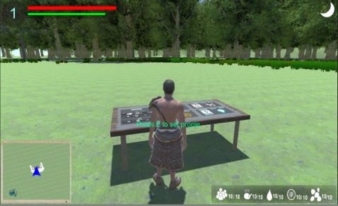

Description: This is a game containing adventure (exploring a unknown island), people managements (with similar elements of “age of empire” ‘s building houses way or “Sangokushi” ’s giving instruction to followers), first-person experience of 3D action fighting and village defending game (like fighting system in “Tomb Raider” and tower defense) , searching survivors and maintaining lives in an island (like”むじんとうものがたり”, Chinese name: “無人島物語”). Player seek for escaping from the island as the goal. In the game, player execute collecting enough resources and exploring the island before the night, and then defending the attack from animals at night. During the adventure, player needs to find resource to build houses and maintain his companions’ lives. Some houses need resources to develop new technology to unlock some items or buildings.
Unlocking these can let player benefit more and develop to a higher level (e.g. collecting resources rate increases, more survivors can be saved, stronger weapon can be equipped to fight against enemies, a variety of differently functional buildings can be built.) Moreover, while player is exploring the unknown island, some survivors may be discovered and then to be saved. These survivors thus become village and then can provide productivity along with expenditure of resource to the village until a strong enough ship or whatever transportation is built. At that moment, the game comes to a good ending. Besides exploring the map, player needs to guide his companions to defend the attack from the wild cruel animals (mainly wolf, crocodile , Scorpion) and fight directly like any kind of 3D action game. If player can break through different dangers and finally escape the island, player will win the game. On the other hand, if player gets himself killed by enemies or the necessary resources to maintain lives of whole villagers are not enough, which brings famine to all companions, player will lose the game. The game is over no matter how player has won or lost any marks before.
Genre: Adventure, survival, 3D, 1st person, PC platform Human resources: 4 developers for 2 semesters, Eric Kwok, Elliot Lau, Walace Lee, Vikki Luk Tools: Unity3D as game engine, 3Dsmax, Adobe fuse, Maximo, Photoshop Special features: Building object, item inventory, weapon equipping, skill tree, network mode 